1. Lean Process Optimization of IFAK Assembly Using DMAIC
This project focused on improving the operational efficiency and quality control of the IFAK (Individual First Aid Kit) Receiving, Inspection, and Assembly processes through structured Lean Six Sigma methodologies. By applying the DMAIC framework alongside tools such as Process Mapping, PFMEA, and Spaghetti Chart analysis, I identified workflow inefficiencies and quality risks within the assembly line. Key improvements included optimizing inventory rotation to mitigate improper sealing risks in modular bandages—reducing the Risk Priority Number (RPN) from 360 to 90—and redesigning part retrieval flow, resulting in a 29% reduction in operator motion. A refined Standard Operating Procedure (SOP) was developed to standardize best practices, enabling improved workforce training and reduced audit intensity.
Project Domain
Quality Engineering | Manufacturing Operations | Process Optimization | Lean Six Sigma
Skills Developed
Lean Six Sigma (DMAIC), PFMEA & Risk Analysis, Process Mapping, Spaghetti Chart Analysis, Root Cause Analysis, SOP Development, Operational Efficiency Improvement, Waste Reduction, Quality Control, Continuous Improvement Strategy
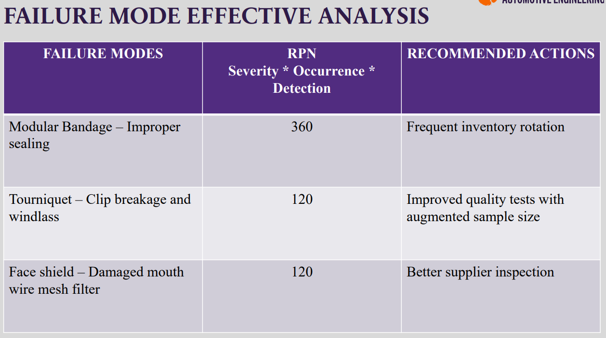
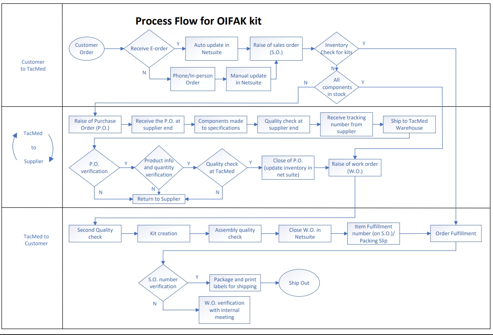
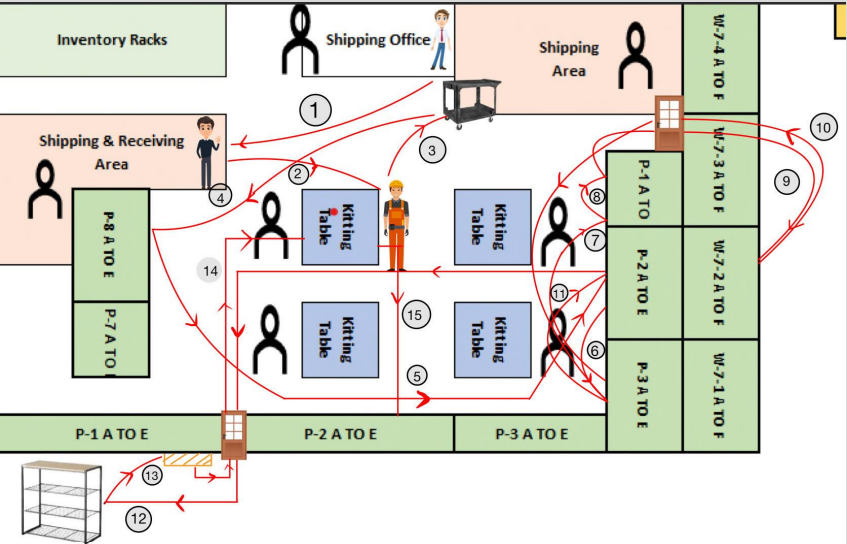
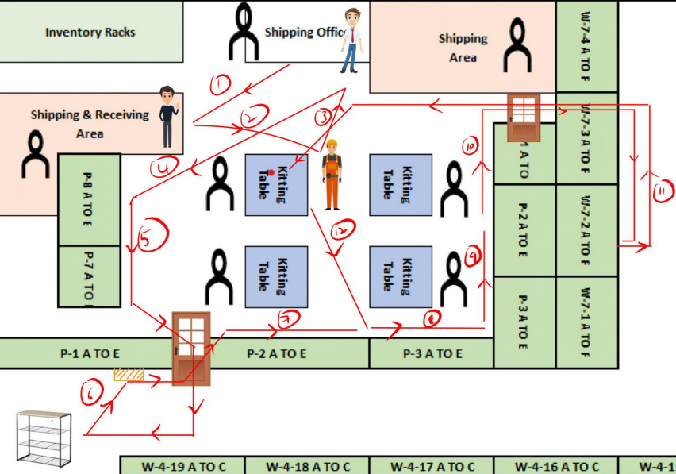
2. Digital Twin-Based Manufacturing Plant Layout Design & Optimization
This project involved designing and optimizing a manufacturing plant layout for the production of bell and bearing housing systems with distinct transmission configurations, all within an $8 million capital budget. Using Siemens Tecnomatix Plant Simulation, I developed a digital twin of the facility to evaluate machine placement, material flow, and production bottlenecks before physical implementation. Through iterative simulation and layout reconfiguration—including strategic machine repositioning and the integration of mezzanine flooring—I achieved 67% machine utilization, reduced system inefficiencies to 22% wait time, and limited block time to 11%. The final layout improved workflow continuity, operational safety, and machine accessibility while maintaining financial feasibility.
Project Domain
Manufacturing Systems Engineering | Industrial Engineering | Production Planning | Facility Layout Design
Skills Developed
Plant Layout Design, Discrete Event Simulation, Digital Twin Modeling, Capacity Planning, Workflow Optimization, Production Flow Analysis, Budget-Constrained Engineering Design, Manufacturing Systems Optimization, Industrial Safety Considerations, Siemens Tecnomatix Plant Simulation
3. Body-in-White (BIW) Structural Design & Finite Element Analysis
This project focused on the design and structural validation of a Body-in-White (BIW) system for a new vehicle platform. Using SolidWorks, I developed a BIW topology that satisfied structural performance and safety requirements while maintaining design feasibility. The model was further validated through comprehensive finite element analysis in HyperMesh, where I evaluated bending stiffness, torsional rigidity, front and rear crashworthiness, and limit load conditions. The analysis ensured compliance with safety standards while optimizing structural integrity and load distribution across the vehicle frame.
Project Domain
Mechanical Design | Automotive Engineering | Structural Analysis | CAE & Simulation
Skills Developed
3D CAD Modeling (SolidWorks), BIW Topology Design, Finite Element Analysis (FEA), HyperMesh Pre-processing, Structural Stiffness Analysis, Crashworthiness Evaluation, Load Case Simulation, Mechanical Validation, Design for Safety, Engineering Optimization
Image will be added from the Drive update.
4. Silicone Mold Metal Casting Design & Gating System Engineering (ZAMAK-3 Batrang)
This project involved the end-to-end design and engineering analysis of a silicone mold casting process to manufacture a ZAMAK-3 Batrang replica for small-batch production. After evaluating material and geometric constraints, platinum-cured silicone was selected as the mold material and ZAMAK-3 as the casting alloy due to its dimensional stability, castability, and mechanical strength. A complete gating system was analytically designed using a non-pressurized 1:2:1.5 ratio to minimize turbulence, oxidation, and flow defects. Detailed calculations were performed for pouring rate, sprue and runner dimensions, ingate sizing, riser design, and solidification time using Chvorinov's rule. The mold and casting assembly—including cope, drag, sprue well, and riser—were modeled in SolidWorks based on derived parameters. The final process was evaluated using cycle time, repeatability, material utilization, operating cost, and flexibility to assess manufacturing feasibility for moderate-volume production.
Project Domain
Manufacturing Engineering | Metal Casting & Foundry Design | Mechanical Design | Process Engineering
Skills Developed
Gating System Design, Casting Process Calculations, Chvorinov's Rule Application, Riser & Sprue Design, Fluid Flow Considerations in Casting, Material Selection (ZAMAK-3 & Platinum-Cured Silicone), SolidWorks 3D Modeling, Design Iteration & Optimization, Manufacturing Feasibility Analysis, Batch Production Planning
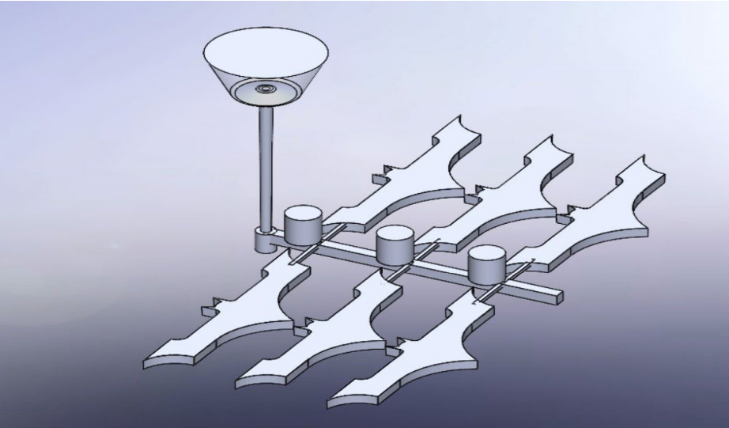
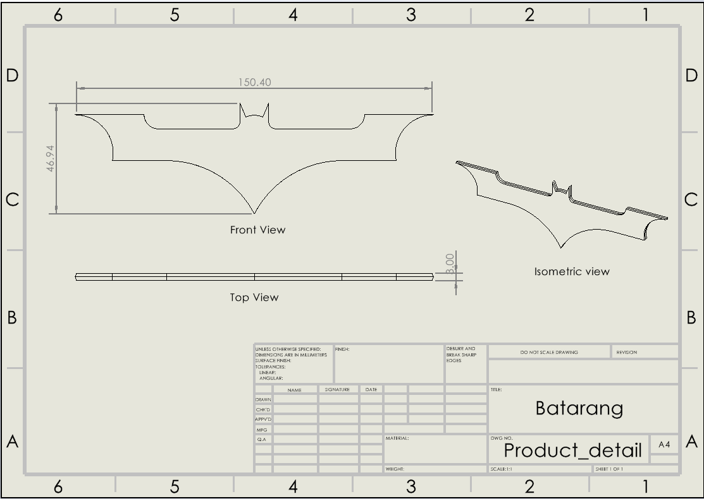
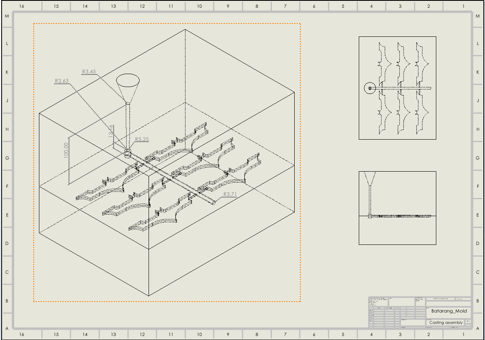
5. Systematic Material Selection & Process Optimization for Snowboard Core Design
This project applied a structured material selection methodology, based on Ashby's materials selection framework, to identify an optimal material for a snowboard core under mechanical, environmental, and economic constraints. The objective was to maximize stiffness, strength, vibration damping, and fracture toughness while minimizing weight and cost within a defined batch size. Using material indices derived from governing equations, candidate materials—including CFRP, GFRP, Aluminum 5056, and Magnesium AE42-F—were screened and ranked through performance charts (Young's Modulus vs Density, Strength vs Density, Fracture Toughness vs Strength, and Loss Coefficient vs Modulus). Process selection analysis identified die casting and resin transfer molding as viable manufacturing routes. A weighted decision matrix (70% performance, 30% cost) was implemented to rank materials, followed by a comparison against traditional wood cores. Although Magnesium AE42-F demonstrated superior mechanical performance, cost and density considerations validated conventional wood cores as the more practical choice for large-scale production.
Project Domain
Materials Engineering | Mechanical Design | Product Design Engineering | Manufacturing Process Selection
Skills Developed
Ashby Material Selection Methodology, Material Index Derivation, Engineering Decision Matrices, Performance-to-Weight Optimization, Cost-Performance Trade-off Analysis, Manufacturing Process Selection, Technical Data Interpretation, Constraint-Based Design, Engineering Documentation & Comparative Analysis
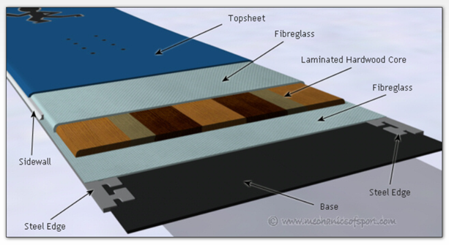
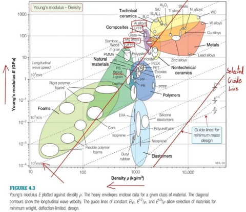
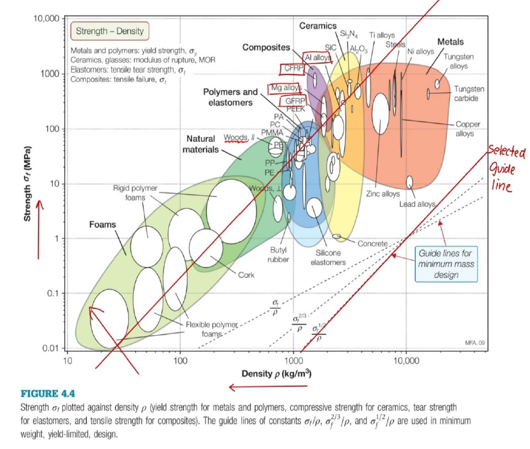
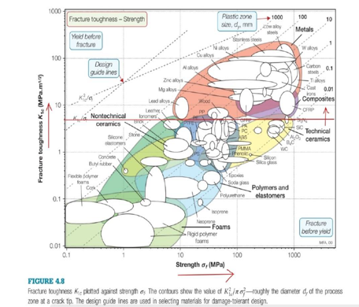
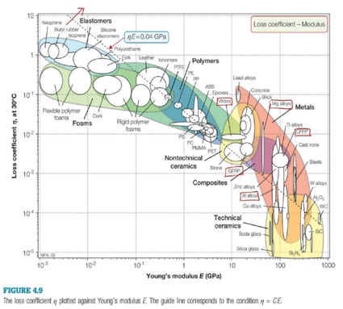
6. Topology Optimization of Fork End in Knuckle Joint Using Multiple Algorithms
This research project, conducted at Clemson University for ME8710 – Engineering Optimization, focused on reducing the weight of a fork end (double eye) in a knuckle joint while maintaining structural integrity under tensile loading. A CAD model was developed in SolidWorks and analyzed in ANSYS Workbench (2020R). Static structural analysis was performed using 304 Stainless Steel under a 50 N tensile load with fixed supports at the fork eyes. Three topology optimization algorithms were implemented and compared with the objective of mass minimization under stress constraints while maintaining structural performance.
- Sequential Convex Programming (SCP)
- Optimality Criteria (OC)
- Genetic Algorithm (MOGA – NSGA-II based)
| Method |
Final Mass (kg) |
Time (min) |
Iterations |
| SCP |
0.63156 |
35 |
18 |
| Optimal Criteria |
0.62992 |
24 |
14 |
| Genetic Algorithm |
1.0082 |
43 |
62 |
Optimality Criteria achieved the best balance of computational efficiency and weight reduction. SCP provided similar mass reduction but required more computational effort. Genetic Algorithm (MOGA) showed significantly lower efficiency in both convergence time and final mass reduction. Additionally, topology optimization was applied to both a rough initial geometry and a pre-optimized CAD model, demonstrating stronger gains in conceptual-stage designs.
Project Domain
Mechanical Design | Structural Optimization | Finite Element Analysis (FEA) | Computational Optimization | Lightweight Engineering
Skills Developed
Topology Optimization (SCP, Optimality Criteria, MOGA), ANSYS Workbench Simulation, Finite Element Modeling (Tetrahedral Meshing), Stress & Deformation Analysis, Constraint-Based Optimization, Multi-Objective Optimization, Parametric Modeling (DesignModeler), Algorithm Comparison & Convergence Analysis, Engineering Decision-Making
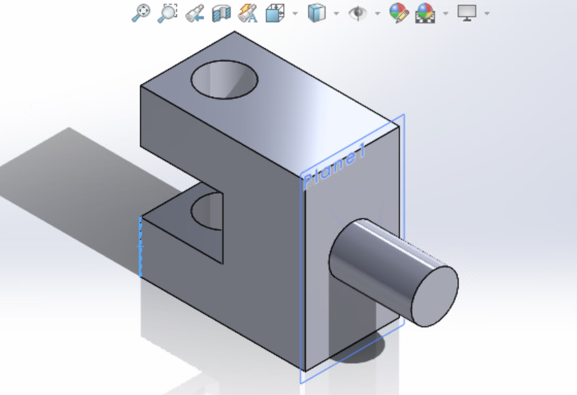
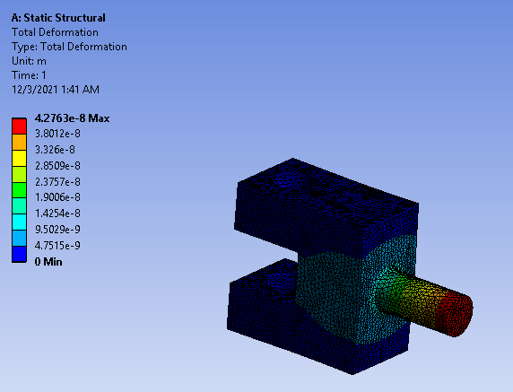
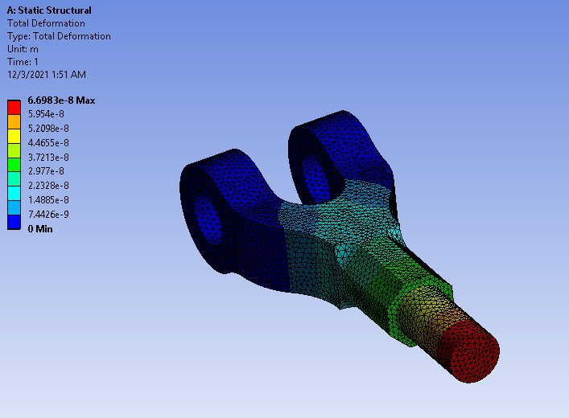
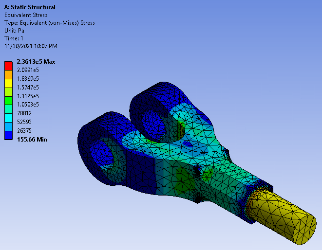
7. Influence of Function Representation on Product Design Creativity and Reliability
This literature review examined how different methods of function representation influence both the creative and analytical phases of product design. Drawing from foundational research in functional modeling, FMEA, value engineering, and FAST methodologies, the study analyzed how tools such as function trees, function structures, morphological analysis, and hierarchical Function Analysis Diagrams (FAD) impact innovation, design fixation, reliability, and resource efficiency. The review compared qualitative approaches used in early conceptual design with quantitative methods used in later stages. Key insights highlighted that structured function representation enhances creativity by reducing cognitive bias and design fixation, while also improving reliability and cost efficiency when integrated with risk-based tools like FMEA. The project emphasized the gap between academic methods and industrial adoption, proposing the need for more resource-efficient functional modeling frameworks for small and medium-scale industries.
Project Domain
Product Design Engineering | Design Methodology | Reliability Engineering | Systems Thinking
Skills Developed
Technical Literature Review & Synthesis, Functional Modeling (Function Trees, Function Structures, FAD), FMEA & Risk Analysis Concepts, Value Engineering Principles, Critical Analysis of Design Methodologies, Engineering Research Writing, Comparative Method Evaluation, Systems-Level Thinking, Linking Creativity with Reliability in Design
No images for this project.
8. Agri-Bot: RF-Controlled Dual-Wheel Agricultural Assistance Robot
Agri-Bot is a dual-wheel robotic platform designed to reduce manual effort in agricultural tasks such as plowing and watering. The system was developed as a compact, remotely operated machine controlled via RF communication. It integrates an Arduino UNO-based microcontroller system, actuator mechanisms, stepper motors for motion control, and a lead-acid battery for onboard power supply. The project focused on combining embedded systems, mechanical actuation, and wireless control to create a cost-effective automation solution for small-scale farming applications.
Project Domain
Robotics | Mechatronics | Embedded Systems | Agricultural Automation
Skills Developed
Arduino Programming, RF Communication Integration, Embedded System Design, Stepper Motor Control, Actuator Integration, Power System Management (Lead-Acid Battery), Mechatronic System Assembly, Prototype Development, Hardware-Software Integration, Agricultural Automation Concepts
9. Design and Simulation of Convergent LPG Burner with Diffuser
This project involves the design and simulation of a convergent LPG burner, aimed at improving combustion efficiency through innovative geometrical modifications. Unlike conventional burners, this design focuses on creating convergent holes while maintaining a constant fuel flow rate and volume. The burner geometry was modeled in SolidWorks and analyzed using ANSYS simulations, taking reference from existing literature to replicate realistic kitchen conditions. A diffuser was integrated into the design to induce a swirling effect, enhancing fuel-air mixing and combustion efficiency. Simulations were conducted for various hole angles and configurations to determine the conditions that maximize thermal efficiency. The final step involves fabrication in brass and performing a water boiling test to empirically verify the efficiency improvements predicted in simulation.
Project Domain
Thermal Systems | Fluid Dynamics | Combustion Simulation | Product Design
Skills Developed
CAD Modeling (SolidWorks), CFD Simulation (ANSYS Fluent/CFX), Heat Transfer Analysis, Fluid Flow Analysis, Combustion Efficiency Study, Prototype Fabrication Planning, Diffuser Design, Engineering Analysis, Experimental Validation Techniques